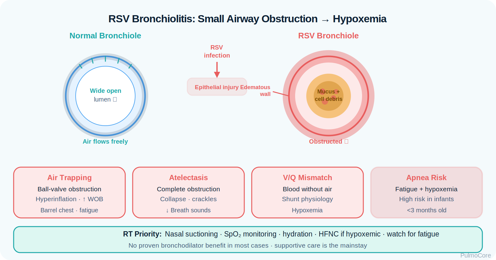
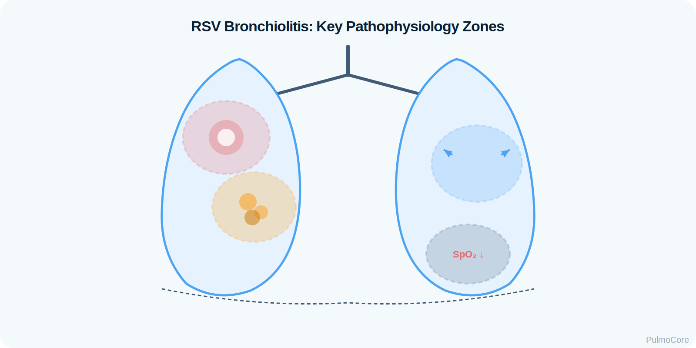
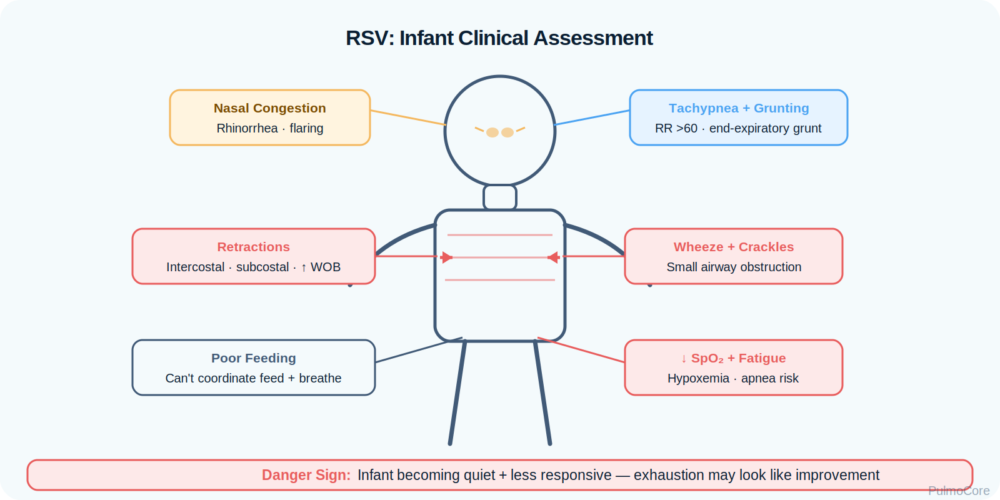

RSV bronchiolitis is a viral lower respiratory tract infection that primarily affects infants and young children. It causes small-airway inflammation, edema, mucus plugging, air trapping, and increased work of breathing. This module focuses on RT-level recognition, supportive care, oxygen escalation, suctioning decisions, diagnostics, and red flags for respiratory failure.
Category Pediatric Viral Lower Airway Disease
Estimated Time 30–40 minutes
Level Core RT Knowledge
Learning Objectives
By the end of this RSV bronchiolitis module, learners should connect viral small-airway injury, mucus plugging, assessment findings, oxygenation trends, supportive interventions, and escalation decisions.
1. Explain pathophysiology Describe how RSV injures bronchioles, increases secretions, narrows small airways, and causes air trapping.
2. Interpret severity Use WOB, feeding, hydration, SpO₂ trend, apnea risk, and mental status to identify mild, moderate, and severe disease.
3. Choose RT interventions Prioritize suctioning, oxygen, humidification, monitoring, and escalation rather than reflexive bronchodilator use.
Watch this quick overview before moving into the disease snapshot.
Disease Snapshot
RSV bronchiolitis is most dangerous in very young infants, premature infants, and children with cardiopulmonary or immune risk factors. The main problem is obstructed small airways, not primary bronchospasm. Care is mostly supportive: maintain airway patency, oxygenation, hydration, and close monitoring.
What it is: Viral inflammation of the small airways.
Primary problem: Bronchiolar edema, mucus plugging, atelectasis, and air trapping.
Key diagnostic clue: Clinical diagnosis based on age, season, viral symptoms, and lower airway findings.
Acute danger: Apnea, exhaustion, cyanosis, dehydration, or persistent hypoxemia.
RT priority: Assess WOB, secretion burden, oxygen need, feeding safety, and response to supportive care.
RT Clinical Connection
For RTs, RSV bronchiolitis is a secretion and small-airway support problem. The RT should avoid treating every wheeze like asthma and instead ask: Is the infant oxygenating, ventilating, feeding safely, clearing secretions, and tiring out?
Board Prep Frame
Associate RSV bronchiolitis with infants, winter season, rhinorrhea progressing to wheeze/crackles, supportive care, nasal suctioning, oxygen if hypoxemic, and escalation to HFNC/CPAP/intubation when distress or failure worsens.
Quick Pre-Check
Start with the RSV bronchiolitis pattern
Which statement best describes the primary airflow problem in RSV bronchiolitis?
Anatomy & Pathophysiology
RSV infects airway epithelial cells and produces inflammation, edema, sloughed cells, and thick secretions in small bronchioles. Because infant airways are narrow, small decreases in diameter can greatly increase resistance.

RSV infection → epithelial injury → bronchiolar edema + mucus + cell debris → small-airway obstruction → air trapping and atelectasis → V/Q mismatch → hypoxemia and increased work of breathing.
What Changes During RSV Bronchiolitis
Change
What Happens
Why It Matters
Bronchiolar edema
Small airway walls swell.
Resistance rises quickly in infant airways.
Mucus plugging
Secretions and debris obstruct bronchioles.
Worsens atelectasis, wheeze, crackles, and oxygenation.
Air trapping
Exhalation becomes incomplete.
Increases WOB and may cause hyperinflation.
Atelectasis
Plugged regions collapse.
Creates V/Q mismatch and hypoxemia.
Fatigue
Infant cannot sustain high WOB.
Raises risk for apnea and respiratory failure.
Danger Sign
An infant who was fighting to breathe and then becomes quiet, limp, or less responsive may be tiring out. Less noise does not always mean improvement.
Click the RSV Hotspots
Click each hotspot to reveal how RSV affects infant breathing.

Start here: Click all four hotspots to complete this activity.
0 / 4 hotspots reviewed
Etiology, Transmission & Risk Factors
RSV spreads through respiratory droplets and contaminated surfaces. Severe disease is more likely in young infants, prematurity, chronic lung disease, congenital heart disease, neuromuscular weakness, immunocompromise, and smoke exposure.
Factor
Why It Matters
RT Focus
Age under 3 months
Higher apnea and deterioration risk.
Monitor closely for pauses, fatigue, feeding difficulty.
Prematurity
Less respiratory reserve.
Escalate earlier if WOB increases.
Chronic lung or heart disease
Lower tolerance for hypoxemia.
Trend SpO₂ and WOB carefully.
Smoke exposure
Airway irritation worsens symptoms.
Teach avoidance and prevention.
Poor feeding
Signals distress and dehydration risk.
Coordinate suctioning and feeding safety.
Sort RSV Findings
Choose the best category for each item, then check your answers.
Exposure to respiratory droplets
Nasal suction before feeding
Prematurity
Apnea or cyanosis
Humidified oxygen when hypoxemic
Complete the sorting activity to continue.
Clinical Manifestations
RSV often begins with upper respiratory symptoms and progresses to lower airway disease. RT assessment should focus on work of breathing, secretion burden, hydration, feeding ability, oxygenation, and fatigue.

Finding Type
What the RT May See
Upper airway
Rhinorrhea, congestion, cough, secretion burden.
Breathing pattern
Tachypnea, nasal flaring, grunting, head bobbing, retractions.
Low or trending-down SpO₂, cyanosis in severe cases.
Feeding/hydration
Poor intake, fewer wet diapers, vomiting, fatigue with feeds.
Neurologic/energy
Irritability early; lethargy or poor responsiveness when severe.
Important Teaching Point
In infants, feeding is respiratory work. An infant who cannot feed because of tachypnea, congestion, or fatigue may need suctioning, hydration support, and closer monitoring.
Diagnostics & Assessment
Bronchiolitis is usually a clinical diagnosis. Testing is used selectively to confirm viral infection, evaluate hypoxemia, or investigate complications and alternate diagnoses.
High-Yield Diagnostic Logic
Tool
Typical Use
RT Interpretation
Clinical exam
Main basis for diagnosis and severity.
Trend WOB, air movement, feeding, hydration, and mental status.
Pulse oximetry
Monitors oxygenation.
Use trends plus clinical appearance; do not treat a number alone.
Viral testing
May confirm RSV for isolation/cohorting.
Does not replace severity assessment.
Chest x-ray
Not routine; used if severe, atypical, or concern for pneumonia/complication.
May show hyperinflation, peribronchial thickening, or atelectasis.
Blood gas
Used in severe distress or suspected failure.
Rising CO₂, acidosis, or fatigue suggests escalation.
Board Prep Framing
If the infant has classic bronchiolitis findings, the best answer often emphasizes supportive care and monitoring rather than routine antibiotics, corticosteroids, or bronchodilators.
Severity Classification & Monitoring
Severity is based on the whole clinical picture: respiratory rate, retractions, feeding, hydration, oxygenation, apnea risk, age, and fatigue.
Escalate respiratory support and notify provider urgently.
Mild Comfortable enough to feed and maintain oxygenation.
Moderate Increased WOB, feeding difficulty, possible oxygen need.
Severe Apnea, exhaustion, cyanosis, poor perfusion, or failure signs.
Severity Decision Activity
A 6-week-old with RSV has RR 68/min, nasal flaring, moderate retractions, poor feeding, and SpO₂ 88% on room air. Which category best fits?
Severity & Red Flags
The key question is whether the infant can maintain oxygenation, ventilation, hydration, and enough respiratory muscle endurance to avoid failure.
Red Flag
Why It Matters
Apnea, cyanosis, or bradycardia
May indicate severe disease or impending failure.
Lethargy, limp tone, poor responsiveness
Possible hypoxemia, hypercapnia, or exhaustion.
Severe retractions, head bobbing, grunting
High work of breathing and fatigue risk.
Persistent hypoxemia despite oxygen
May require HFNC, CPAP, or higher-level care.
Poor feeding or dehydration
Infant may not safely maintain intake.
Rising PaCO₂ or acidosis
Suggests ventilatory failure.
Management & Treatment
RSV bronchiolitis treatment is primarily supportive. The goal is to reduce work of breathing, maintain oxygenation, support hydration, and escalate respiratory support when needed.
Supportive Care Priorities
Intervention
Why It Helps
RT Decision Point
Nasal suctioning
Improves nasal airflow and feeding tolerance.
Use especially before feeds or oxygen escalation.
Humidified oxygen
Corrects hypoxemia and supports comfort.
Titrate to ordered target and reassess WOB.
HFNC
Provides heated humidified flow and may reduce WOB.
Use when low-flow oxygen is insufficient or WOB remains high.
Hydration support
Prevents dehydration and thick secretions.
Coordinate with team if feeding unsafe.
Bronchodilator trial
May be considered if asthma-like response suspected.
Continue only if objective improvement occurs.
Antibiotics/steroids
Not routine for uncomplicated viral bronchiolitis.
Use only when another indication exists.
RSV Supportive Care Sequence
Select the steps in the best general order for an infant with moderate RSV bronchiolitis and hypoxemia.
Assess WOB and oxygenation
Clear nasal secretions
Start/titrate humidified oxygen
Reassess feeding and hydration
Escalate to HFNC/CPAP if distress persists
Prepare for advanced airway if failure develops
Complete the sequence activity to continue.
Escalation & Respiratory Support
Escalation is needed when supportive care does not stabilize oxygenation, work of breathing, feeding safety, or ventilation.
Watch for: Apnea, severe retractions, grunting, cyanosis, exhaustion, persistent hypoxemia.
Support goal: Reduce WOB while maintaining oxygenation and hydration.
Escalation concept: Low-flow oxygen → HFNC → CPAP/NIV where appropriate → intubation if failure develops.
Board Pearl
Do not choose routine bronchodilators, antibiotics, or corticosteroids as first-line treatment for uncomplicated RSV bronchiolitis. Choose suctioning, oxygen, hydration support, monitoring, and escalation for failure signs.
Respiratory Therapist Role
The RT is central to bedside assessment, suctioning, oxygen delivery, HFNC/CPAP setup, response monitoring, caregiver education, and urgent escalation.
RT Task
What to Assess or Do
Why It Matters
Assess WOB
RR, retractions, nasal flaring, grunting, head bobbing.
Detects deterioration before SpO₂ alone changes.
Manage secretions
Nasal suctioning, humidification, timing before feeds.
Improves airflow and feeding tolerance.
Support oxygenation
Low-flow oxygen, HFNC, CPAP as ordered.
Corrects hypoxemia and reduces work in selected patients.
Monitor response
SpO₂ trend, WOB, feeding, mental status, CO₂ when severe.
Determines whether current support is enough.
Educate caregivers
Hand hygiene, smoke avoidance, suction basics, return precautions.
Supports prevention and safe discharge planning.
Guided Unfolding Case Study
The Infant Who Is Working Too Hard
This guided case reveals one stage at a time. Learners make an RT decision, receive feedback, and then continue.
Stage 1: Initial Presentation
A 2-month-old arrives with 3 days of congestion and cough. Today the infant is breathing fast and feeding poorly.
Decision Question: What is the priority first action?
Stage 2: After Suction and Low-Flow Oxygen
After nasal suctioning and oxygen, SpO₂ improves to 92%, but RR remains 70/min with moderate retractions and poor feeding.
Decision Question: What is the best next RT recommendation?
Stage 3: Fatigue Appears
Two hours later the infant becomes sleepier. Retractions are less forceful, breath sounds are diminished, and a blood gas shows rising CO₂ with acidosis.
Decision Question: How should this change be interpreted?
Stage 4: Escalation Decision
The team prepares for possible CPAP or intubation depending on response. The infant has recurrent apnea and worsening gas exchange.
Decision Question: Which finding most strongly supports urgent escalation?
Case Wrap-Up
RT Takeaway: RSV bronchiolitis care is supportive: suction, oxygen, humidification, hydration coordination, and close reassessment.
If the infant worsens: apnea, lethargy, cyanosis, persistent hypoxemia, rising CO₂, or acidosis require urgent escalation.
Knowledge Check
Board-Style Practice
Answer each question to complete this activity. Answer choices shuffle each time the lesson opens.
Question 1
An infant with rhinorrhea, cough, wheezes, crackles, tachypnea, and retractions during RSV season is diagnosed with bronchiolitis. What is the main pathophysiologic problem?
Question 2
Which intervention is most appropriate first-line supportive care for an infant with RSV congestion and feeding difficulty?
Question 3
Which finding is most concerning in RSV bronchiolitis?
Question 4
An infant on oxygen remains tachypneic with severe retractions and poor feeding. Which escalation is most appropriate to discuss?
0 / 4 questions answered
FAQ
Common RSV Bronchiolitis Questions
What is the simplest way to understand RSV bronchiolitis?
It is viral small-airway inflammation in infants that causes swelling, mucus plugging, air trapping, and increased work of breathing.
Is RSV treated like asthma?
No. Wheezing can occur, but routine bronchodilators are not first-line for typical bronchiolitis. Supportive care is the foundation.
Why is suctioning so important?
Infants breathe mainly through the nose, especially during feeding. Clearing secretions can reduce obstruction and improve feeding tolerance.
When should the RT worry about respiratory failure?
Apnea, lethargy, worsening hypoxemia, severe retractions, grunting, rising CO₂, acidosis, or exhaustion are major warning signs.
Are chest x-rays required for every infant?
No. Bronchiolitis is usually a clinical diagnosis. Imaging is reserved for severe, atypical, or complicated presentations.
What does HFNC do?
HFNC provides heated humidified flow and oxygen, may reduce work of breathing, and can improve tolerance compared with dry low-flow oxygen.
Summary & Clinical Pearls
RSV bronchiolitis is a viral small-airway disease of infants and young children. It causes bronchiolar edema, mucus plugging, atelectasis, air trapping, V/Q mismatch, and increased work of breathing. Management is mostly supportive and escalation is based on clinical severity.
Must know: RSV bronchiolitis is primarily small-airway obstruction from edema and mucus, not classic asthma bronchospasm.
Board pearl: Choose suctioning, oxygen, hydration, and monitoring before routine antibiotics, steroids, or bronchodilators.
RT pearl: Trend WOB, feeding, hydration, SpO₂, mental status, and fatigue — not wheeze alone.
Common mistake: Do not assume a tired, quiet infant is improving. Quiet plus rising CO₂ or apnea is dangerous.
Glossary System
Tooltip, searchable glossary, and mastery deck
Searchable Glossary
Terms are stored once and can power inline tooltips, glossary entries, and flashcards.
Glossary Flashcard Mastery Deck
Click the card to flip it. Use Term → Definition or Definition → Term mode. Mark known cards to move them into the completed pile.